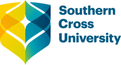

Applied AI & Connected Systems · UniSC
Intelligence in Synergy
Applied AI and connected systems for healthier lives, sustainable food, personal learning and safer mobility.
Research areas
Six areas, one connected vision
From hospitals and homes to farms, classrooms and roads, we design AI and connected technologies (IoT, IoV) that solve real problems.
AI for Health
SYNTERA Health
Disease prediction, Medical imaging, Remote monitoring…
Smart Health Home
SYNTERA HomeEmerging
Elderly care, Fall detection, Ambient assisted living…
AI for Agriculture
SYNTERA AgriEmerging
Crop disease detection, Precision farming, Smart irrigation…
AI for Education
SYNTERA Edu
Personalized learning, Learning analytics, AI tutors…
Internet of Things
SYNTERA Connect
Edge AI, Sensor networks, IoT security…
Internet of Vehicles
SYNTERA MobilityEmerging
V2X communication, Traffic prediction, Driver safety…
Latest papers
Recent research output
- 2026 EGenAI-DBR: A design-based framework for responsible generative AI integration in higher educationEducation Innovations: Systems and Future Learning, 1(2)
- 2026 An extended community of inquiry framework for monitoring and predicting online peer learning participationJournal of Applied Research in Higher Education, 18(8), 113–141
- 2026 SELM-CTR: A stacking ensemble deep learning model with SHAP-based analysis for large-scale click-through rate predictionInternational Journal of Intelligent Computing and Cybernetics, 19(3)
- 2026 Latent-space feature squeezing for adversarially robust intrusion detection on IoT edge devicesInternational Journal of Intelligent Computing and Cybernetics, 19(4)
- 2026 An IoT-aware certificateless signature scheme for protection against type-I and type-II super adversariesIoT, 7(2)
Our name
Syn · Te · Era
SYNTERA brings together Synergy, Intelligence and Era: a new era where AI works in synergy with health, agriculture, education, homes and mobility.
Based at the University of the Sunshine Coast with members and collaborators across 6 countries.
About the lab


Collaborators
Institutions we work with
Universities where our members are based.
University of the Sunshine Coast
Shahrzad Saremi, Hilda Jemutai Bitok
Southern Cross University
Rania Shibl, Sadegh Rajaei